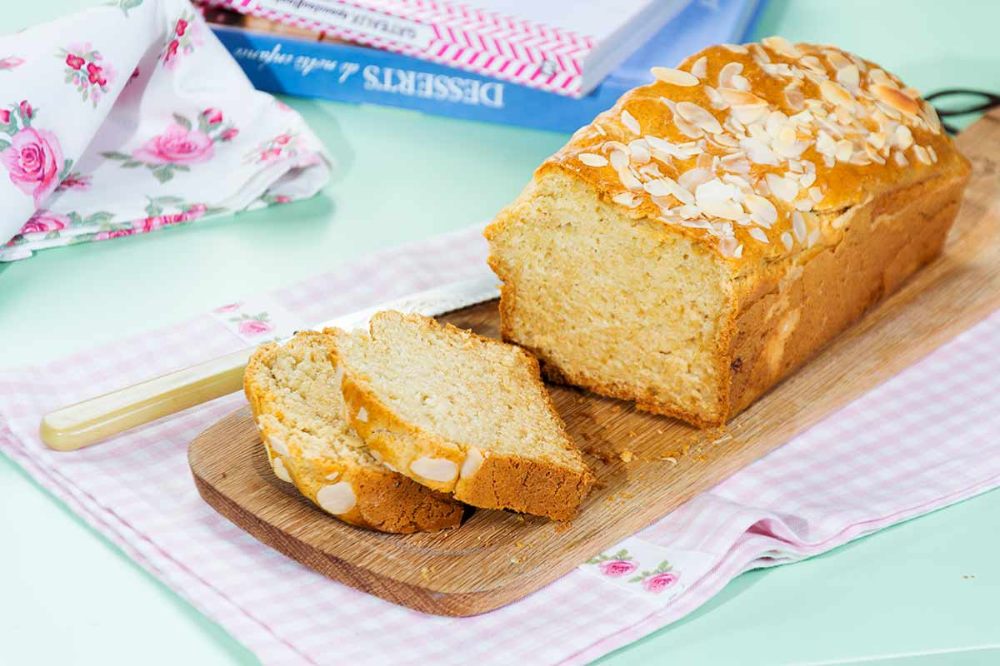

Receta bizcocho súper sabroso y saludable
Descripción
Este bizcocho es súper sabroso y saludable, es el clásico bizcocho de yogur pero traducido a la comida real. Sin azúcar, sin edulcorantes, sin harina refinada, sin nada ultra procesado.
Ingredientes
- 1 yogur natural
- 1 medida de yogur de aceite de oliva virgen extra
- 3 medidas de yogur de harina de trigo integral
- 4 huevos
- 1 sobre de levadura de repostería
- 200 gramos de dátiles en rama sin azúcar añadido
- 30 gr de nueces picadas
Elaboración paso a paso
Primer paso: Primero pelamos las manzanas y le sacamos el hueso a los dátiles.
Paso dos: Añadimos a la batidora las manzanas, los dátiles y los huevos, lo batimos todo que quede bien mezclado.
Tercer paso: Ahora echamos el yogur, la harina y los huevos, removemos bien todo que quede uniforme y lo echamos al molde de bizcocho.
Cuarto paso: Precalentamos el horno a 160 con calor por arriba y por abajo.
Quinto paso: Ponemos el molde en el horno por unos 40 minutos, podéis ir comprobando con un cuchillo, lo pincháis y cuando salga seco y limpio es que está listo.
Dejamos que se quede a temperatura ambiente y ya lo podemos comer, dura bien unos días sin problema, lo podéis usar para desayunos, meriendas o tentempiés durante el día.
Nosotros ya hacemos uno casi cada semana, en casa vuela. ¡No olvides que toda receta lleva un toque personal así que añade el tuyo para hacerla aún mejor si cabe! ¡Buen provecho!